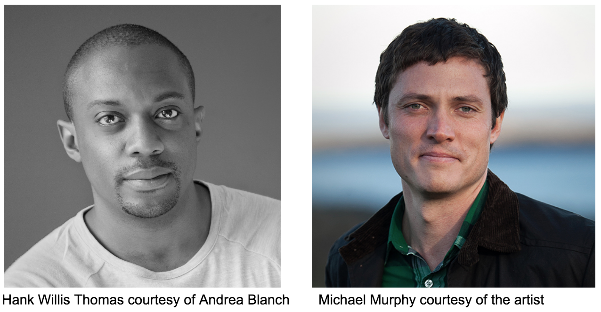
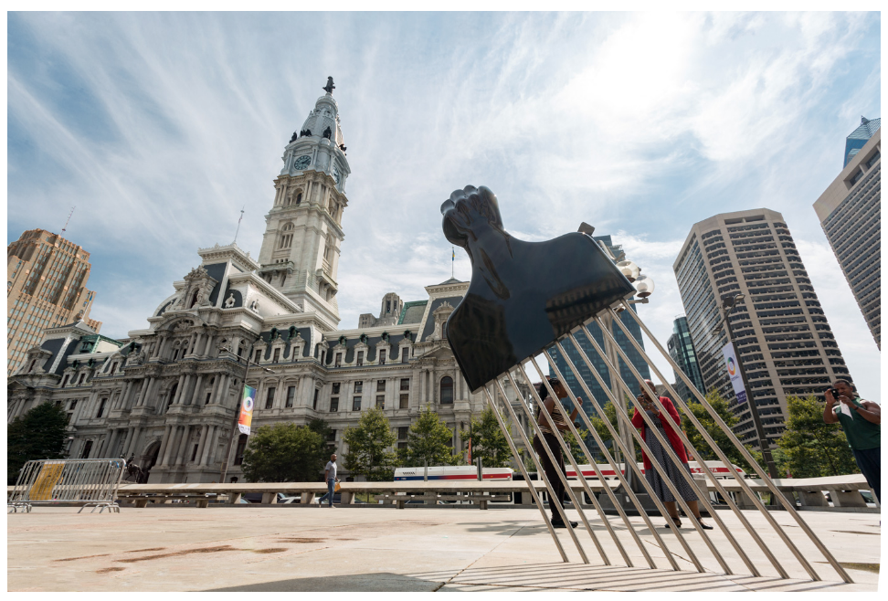
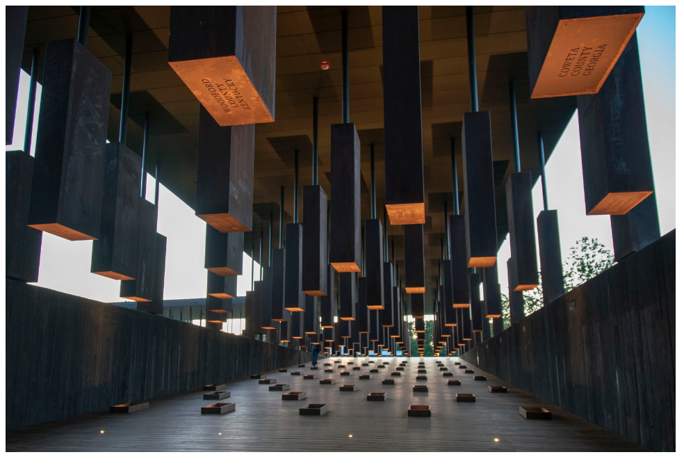
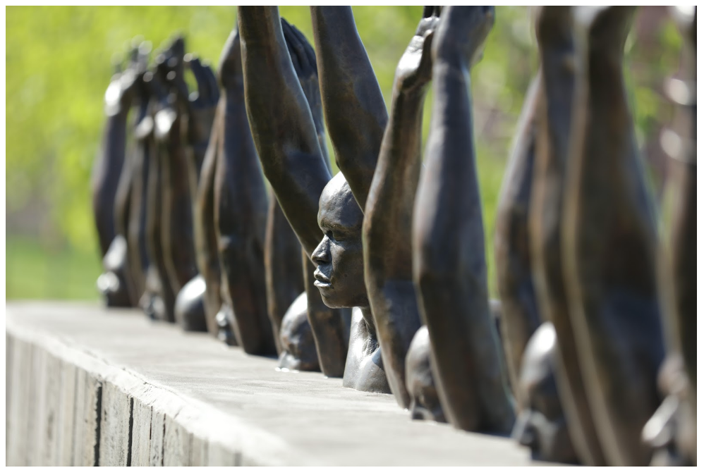

Hank Willis Thomas and MASS Design Group share deep experience with promoting Social Justice through art and architecture. The built environment is not neutral. It either heals or it hurts. Art and Architecture are mechanisms that project values far beyond a physical being into the lives of communities and people.
HANK WILLIS THOMAS is a conceptual artist working around themes related to identity, history and popular culture, often seeking out and utilizing recognizable icons from popular branding and marketing campaigns. In using icons and other nods to popular culture, he encourages the viewer to question commercial consumer representation and the racial stereotypes it perpetuates. A common practice in his artistic process, Thomas looks to the ways popular imagery informs how people perceive themselves and others around the world, comparing this practice to the one of a “visual cultural archaeologist.”
MASS DESIGN GROUP designs built environments that seek to improve people’s lives in measurable ways and are infused by the potential to promote justice and human dignity. MASS rethinks the building not as a noun but as a verb, and through such transformation, forces the building process to engage with end stakeholders, and become a catalyze for hope and change in physical space. The MASS portfolio of work includes architectural design, master planning, landscape architecture, engineering, and research. MASS is based in Boston, MA and Kigali, Rwanda.

All Power To All People,
Hank Willis Thomas. Photo credit - Steve Weinik

The Memorial to Peace and Justice,
MASS Design Group, Equal Justice Initiative,
Courtesy of the Artist.

Raise Up, Hank Willis Thomas, for Equal Justice Initiative,
Montgomery. Photo credit - Human Pictures / EJI.